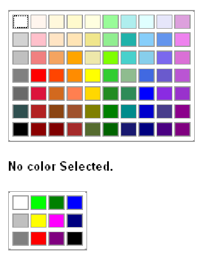

The ColorChooser class provides to the user a palette of colors to choose from with the mouse. The ColoChooser component can be laid anywhere on the GWT module, it means that there are no constraints with the choice of a container of widgets.

The palette proposes a choice of 12 colors or 70 colors. There are two ways to create a palette of colors. One without parameter, the easiest and an other with a parameter staying simple despite everything. First of all, we need to import the class like this:
Without parameter: The palette of colors will have 70 colors by default.
With parameter: The parameter specifies the number of colors wanted for the palette. There are 2 static constant of the class ColorChooser.
The possible values are :
What gives us concretely:
. The ColorChooser class doesn’t handle really colors i.e. object modelling a color like java.awt.color by example. The ColorChooser class uses the hexadecimal representation format of a color. By default the selected value for each palette (12 or 70 colos) is: #000000 which is the black color.
Modify the selected color: The modification of the current color can be done by 2 ways. One by specifying the color that we want to select, or by a mouse click event on the palette, in this case it will have to be attached on the browser in order that events are taken into account. The signature of the method to modify the selected color is the following:
The method takes in parameter a string. This string has to correspond to a color in its hexadecimal representation format as we said it before. Warning in this first version of this component there is not checking on the given string.
Get the selected color. To get the selected color from the palette, use this simple method below:
The method getColor() returns the hexadecimal representation format of the color.
The ColorChooser component has the property to notify a change of the selected color. To use this property, you just need to add a listener with a type com.google.gwt.user.client.ui.ChangeListener.
So, each time a new color will be selected, the text of the label will display the hexadecimal code of the color and, the text will have the color of the selected color.